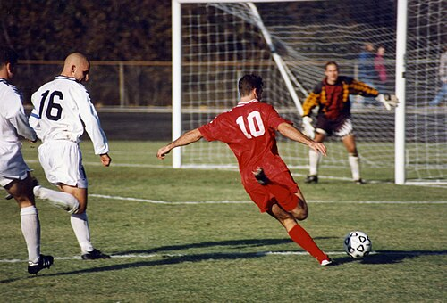

Futebol
|  |
O futebol (em inglês: football, soccer) - originalmente futebol associado(em inglês: association football), e também referido como futebol de campo ou futebol de onze - é um esporte de equipe jogado entre dois times de 11 jogadores cada um e um árbitro que se ocupa da correta aplicação das normas. É considerado o desporto mais popular do mundo, pois cerca de 270 milhões de pessoas participam das suas várias competições. É jogado num campo retangular gramado, com uma baliza em cada lado do campo. O objetivo do jogo é deslocar uma bola através do campo para colocá-la dentro da baliza adversária, ação que se denomina gol(pt-BR) ou golo(pt-PT). A equipe que marca mais gols ao término da partida é a vencedora. O jogo moderno foi criado na Inglaterra com a formação de The Football Association, cujas regras de 1863 são a base do desporto na atualidade. O órgão regente do futebol é a Federação Internacional de Futebol (em francês: Fédération Internationale de Football Association), mais conhecida pelo acrônimo FIFA. A principal competição internacional de futebol é a Copa do Mundo FIFA, realizada a cada quatro anos. Este evento é o mais famoso e com maior quantidade de espectadores do mundo, o dobro da audiência dos Jogos Olímpicos.
Origem do nome
As regras do assim chamado "association football" foram codificadas na Inglaterra pela FA no ano de 1863 e este nome foi cunhado para distinguir o jogo das outras formas de futebol jogados na época, como o rugby football e o futebol gaélico, por exemplo. A primeira "referência à bola inflada usada no jogo" foi em meados do século XIV: "Þe heued fro þe body went, Als it was a foteballe". Já a palavra soccer, como uma abreviação de association apareceu pela primeira vez em escolas privadas e universidades inglesas na década de 1880 (às vezes usando a variante ortográfica "socker"). De acordo com o Online Etymology Dictionary, as "regras do soccer" foram feitas em 1848, antes da divisão do "association football" com o "rugby football" em 1863. O termo "soccer" vem de uma gíria ou abreviação jocular da palavra "association", com o sufixo "-er" anexado a ele. Esta palavra (que chegou à sua forma final em 1895) foi registrada pela primeira vez em 1889 na forma anterior de socca. A forma final "soccer" é creditada a Charles Wreford-Brown, um estudante da Universidade de Oxford que gostava de usar formas encurtadas de palavras, como "brekkers" para o café da manhã e "rugger" para o rugby. Clive Toye observou que ele pegou a terceira, quarta e quinta letras de association e a chamou "soc-cer". O termo association football nunca foi amplamente utilizado, embora na Grã-Bretanha alguns clubes de futebol em redutos onde o rugby football é popular adotaram o sufixo Association Football Club (A.F.C.) para evitar confusão com o esporte dominante em sua área. Por quase cem anos depois de ser cunhado, a palavra "soccer" foi uma alternativa aceita e incontroversa na Grã-Bretanha se referir ao futebol, muitas vezes em contextos coloquiais e juvenis, mas também foi amplamente utilizado na fala formal e escrita sobre o jogo. "Soccer" era um termo usado pela classe alta, enquanto a classe trabalhadora e a classe média preferiam a palavra "football"; como a classe alta perdeu influência na sociedade britânica a partir da década de 1960, "football" suplantou "soccer" como a palavra mais usada e aceita. Há evidências de que o uso da palavra "soccer" está diminuindo na Grã-Bretanha, sendo considerado como um termo inglês americano. Dentro dos países de língua inglesa, o association football é atualmente chamado de "futebol" no Reino Unido e principalmente "soccer" no Canadá e nos Estados Unidos. Pessoas em países onde outros códigos de futebol são predominantes (Futebol australiano na Austrália, Futebol gaélico na Irlanda, e Futebol Rugby no País de Gales, África do Sul e Nova Zelândia) podem usar ambos os termos, embora as associações nacionais na Austrália e Nova Zelândia usem principalmente "football" para o nome formal. "Fitbaa", "fitba" ou "fitbaw" é uma renderização da pronúncia escocesa de "football", muitas vezes usada em um contexto humorístico ou irônico. No resto do mundo, o association football, em sua forma moderna, foi exportada pelos britânicos, e muitas das nações adotaram este termo inglês comum para o esporte em sua própria língua. Isso geralmente era feito de duas maneiras: seja importando diretamente a palavra em si, ou como calque traduzindo suas partes constituintes, "foot" e "ball", como, por exemplo, "balompié".
História
Origem do esporte
A atividade mais antiga que se assemelha ao futebol moderno da qual se tem conhecimento data dos séculos III e II a.C. Estes dados são baseados em um manual de exercícios correspondentes à dinastia Han da antiga China. O jogo era chamado ts'uh Kúh (cuju), e consistia em lançar uma bola com os pés para uma pequena rede. Uma variante incluía uma modalidade onde o jogador deveria passar pelo ataque dos seus adversários. Também no Extremo Oriente, embora cerca de cinco ou seis séculos depois do cuju, existia uma variante japonesa chamada kemari, que tinha um caráter mais cerimonial, sendo o objetivo do jogo manter uma bola no ar passando-a entre os jogadores. O kemari até hoje é praticado no Japão, em eventos culturais. No Mediterrâneo destacaram-se duas formas de jogo: o harpasto, em Roma, e o epísquiro, na Grécia, sobre o qual se tem pouca informação. O primeiro era disputado por duas equipes em um terreno retangular demarcado e dividido pela metade por uma linha. Os jogadores de cada equipe podiam passar uma pequena bola entre eles, e o objetivo do jogo era enviá-la ao campo contrário. Esta variante foi muito popular entre os anos 700 e 800, e, apesar de ter sido introduzida nas Ilhas Britânicas, sua ascensão até o futebol moderno é incerta. O epísquiro era feito por duas equipas, normalmente entre 12 e 14 jogadores cada, com uma bola, e segundo as regras era permitido o uso das mãos.